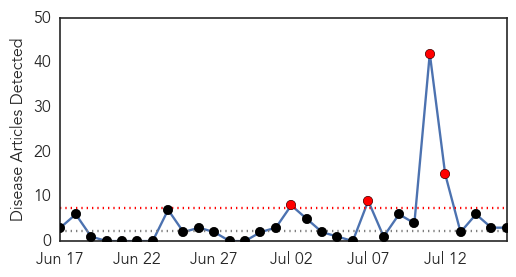
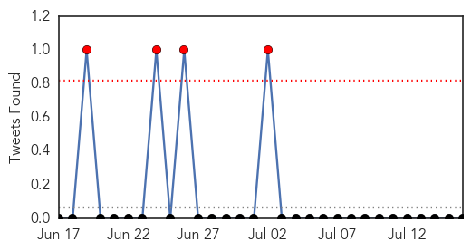
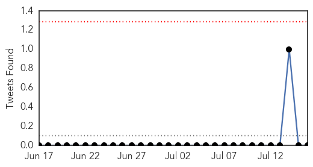

Influenza
30-Day Web Trend
4 alerts, 0 warnings

30-Day Twitter Trend
0 alerts, 0 warnings

Article Locations

Article Confidences
Top Articles:
Top Tweets:
- 0.569
- Influenza & Pregnancy - A Guide for Doctors & Midwives. Download: http://t.co/mMCFXz7Qql flusmart flu
Swine Flu
30-Day Web Trend
6 alerts, 3 warnings
30-Day Twitter Trend
0 alerts, 0 warnings

Article Locations
Article Confidences

Top Articles:
Top Tweets:
-
No tweets found for Jul 16, 2014